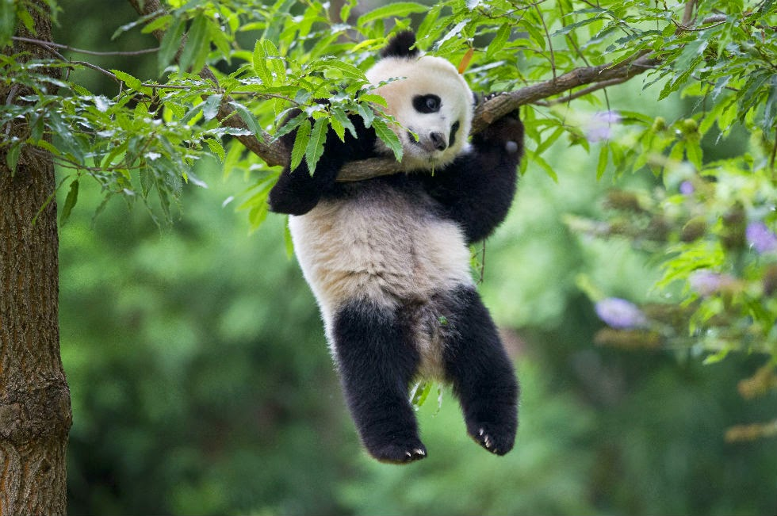
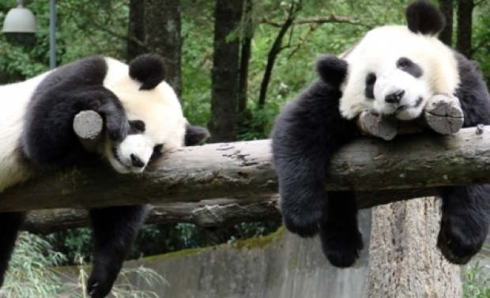
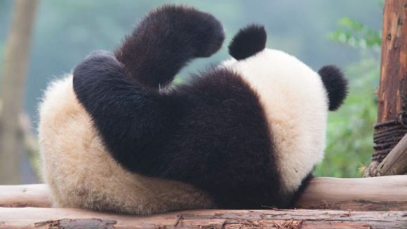
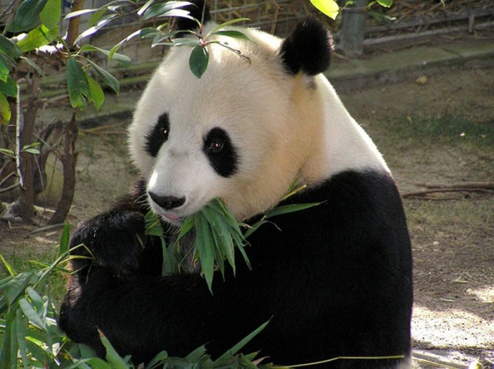

Durata de viata: 25 si 35 ani
Unde traieste (mediu de viata): Muntii din China centrala, la mari atitudini, in paduri de bambus
Dieta: Carnivor
Clasa: Mamifere
Nume stiintific: Ailuropoda melanoleuca
Ce mananca (mancarea principala): Bambus,fructe,rozatoare
Predatori: Oamenii,leoparzii
Panda, ursul este si cunoscut sub denumirea de ursul de bambus, datorita regimului sau alimenta rexclusivist, fiind foarte sensibil la schimbarile de habitat.Ursii panda ocupau candva o mare parte din China, precum si nordul Birmaniei si Vietnamului. Dar schimbarile climatice si in primul rand cresterea populatiei umane i-a alungat din aceste regiuni. In prezent, ultimii ursi de bambus traiesc in sase zone din sud-vestul Chinei. Unele parti din aceste regiuni muntoase, izolate una de cealalta, sunt rezervatii naturale, dar aproape jumatate din populatia de panda traieste in afara zonelor protejate.
La ora actuala, in lume, mai exista doar vreo 2.500 - 3.000 de exemplare de Panda. Alte cateva sute sunt raspandite prin gradinile zoologice ale lumii. Asadar ca interesul pe care oamenii il au pentru prezervarea acestei specii este cat se poate de justificat. Tocmai de aceea, fiecare pui de Panda este tratat cu cea mai mare atentie. Este masurat periodic, este cantarit si verificat, ca nu cumva sa se imbolnaveasca. Bineinteles, cei care au grija de ursuleti nu se pot abtine sa nu-i rasfete cat pot. Cu atat mai mult cu cat puii nascuti in captivitate nu vor fi lasati de capul lor, prin paduri. Nimeni nu risca sa expuna un Panda tirului braconierilor.
In plus, daca puiul este nascut de o mama aflata in captivitate, nu are nici cea mai mica sansa de supravietuire. Deci e mult mai bine sa fie lasat in "gradina" lui de Panda, unde sa se antreneze toata ziua. Si ce-i place mai mult unui ursulet decat sa se catere in copaci? Probabil nimic. Iar faptul ca nu fiecare aterizare este o reusita, nu-l descurajeaza absolut deloc.
Va dati seama ca o bombita de energie cum e un pui de Panda secatuieste de puteri orice mama, fie ea cat de mare si de rezistenta. Iar asta poate sa inteleaga orice femeie care are minimum un copil. La finalul unei zile, nu mai e in stare sa se miste, nici daca vede cum se apropie un tren in viteza.Situatia se schimba, insa, in cazul creselor deursuleti Panda. Acolo fiecare biluta imblanita are propriul ingrijitor. Deci trei pui de Panda, trei doamne care le inmaneaza biberoanele. Din fericire, ursuletii nu sunt in pericol sa se inece cu lapte in momentul in care se trantesc pe spate.
De asemenea, ingrijitorii trebuie sa invete puii sa fie temerari. Char daca asta inseamna sa se catere la o oarecare inaltime si sa alunece pe tobogan.
Curiozitati:
- Se naste fara blana, doar cu o piele rozalie, iar daca nu este tinut in brate la pieptul mamei timp de o luna incontinuu, puiul moare de hipotermie.
- Ursii panda au culoarea roz cand se nasc.
- Puiul panda are cele mai mici dimensiuni la nastere dintre toate mamiferele.
- Intre 6 si 8 saptamani, puii de panda nu-si pot deschide ochii, si sunt aproape imobili pana la varsta de 3 luni. 
- Mama panda poate avea grija de doar un singur pui.
- O ursoaica fata doar un pui la fiecare doi ani.
- Ursii panda isi petrec 16 ore pe zi mancand.
- Un urs panda poate manca intre 18 si 36 de kilograme de bambus pe zi.
- Nu iti dai seama daca un urs panda este mascul sau femela decat dupa 4 ani.
- Cand bambusul este acoperit de zapada, ursii panda se hranesc cu frunze si cu rozatoare mici.
- Ursii panda sunt pe cale de disparitie. In libertate traiesc mai putin de 1.000 de exemplare.
- In captivitate sunt aproximativ 110 panda, cei mai multi in China, dar si in Statele Unite, Mexico City, Japonia, Spani, Germania, Franta si Coreea de Sud. 
- Numarul ursilor panda este din ce in ce mai mic din cauza reducerii habitatului lor natural, dar si a aparatului lor reproductiv foarte lent.
- Intr-o singura zi, un adult poate consuma 40 de kilograme de muguri de bambus sau 20 de kilograme de frunze.
- 100 DE GRAME. Atat cantareste de obicei un ursulet panda nou-nascut. Uneori, chiar si 75.
- Ursul panda are sase degete la picioare.
- Imparateasa Dowager Bo a fost inormantata in cavou alaturi de un panda.
- Pentru chinezi, panda este un simbol al prieteniei si al pacii.
- Pana in anul 1995, adorabilul ursulet Panda nu a fost considerat a fi o specie de urs, el fiind mai degraba incadrat in specia ratonilor.
- Un alt aspect interesant despre Panda este si acela ca ei au cea mai lunga coada dintre speciile cunoscute de urs, coada lor fiind pana la 6 centimetri.